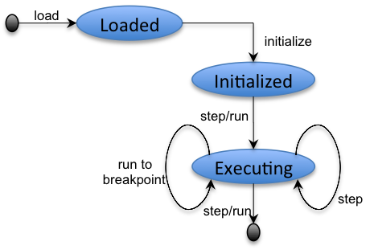

EDB allows you to browse, create, edit and run ESL applications.The ESL development environment is called EDB. It supports the development, execution and debugging of ESL applications. ESL is an Actor-based language. An actor is an independent computational unit that runs in its own thread. An actor has a message queue; messages sent to an actor are queued until the actor is ready to consume the message causing a new actor-thread to be created for the message. Actors have state that they can change, and can send messages to other actors. Actor state can be private or shared. At regular fixed intervals, all ESL actors receive a message telling them the current time. The time messages allow the actors to synchronise and are used to drive an ESL application. Think of an ESL application as a community of communicating actors that are synchronised by time messages.
The EDB life-cycle for an ESL application is shown below:

An ESL application is a collection of files with a main file that is loaded onto the ESL Virtual Machine. Loading a main file causes the file and any file that it imports to be compiled and checked. Subsequent loading will check whether a file has been changed and will only re-load if the file has been modified.
Once an application has been
loaded, it must be initialized. Initialization causes the main
actor to be
created ready for execution. After initialization you will see
an actor called
'main' created in the panel labelled 'Actors' in the EDB window.
You can run
the initializer for an application by clicking on  or by stepping by clicking
.
or by stepping by clicking
.
Once initialized, the application is ready to run. You can run an application by selecting in which case it will run until it completes or until it hits a break-point that you have inserted. You can step an application by selecting in which case the application will advance to the next line in the source code. You can stop a running application by clicking on .
Any output from the application will be sent to the console. You can clear the console using the right-click menu on the console background.
The browser-tree on the left shows a view on the file system rooted at the folder supplied as the first startup argument to the EDB Java application. The browser shows only those files that are meaningful to EDB. You can perform the following operations via right-click menus in the browser:
When you open a file an editor is created showing the contents of the file. If the file is of type '.esl' then the editor will show any parse-errors using a red underline roughtly where the parse error is located. Hover over the red line using the mouse to bring up a diagnostic message that described the reason for the error.
When you have finished editing the file in the editor, you can load and run the file via a right-click menu. Loading the file will only be successful if the file does not contain errors. If the file imports any other applications then they will also be loaded. Loading occurs once and then caches the resulting module. The module will only be reloaded if the source code has changed and you cause a load request.
Once loaded, a module must be initialized. The initialization will create an instance of the actor called 'main' which must be defined and exported from the loaded module:
import 'm.esl';
export main;
act main {
Time(t) -> {
print('stop at time ' + t);
stopAll()
}
}
The example shown above is a
single module that imports the module defined in the file m.esl.
Since it is a
module that defines and exports a behaviour called main, it can
be loaded,
initialized and executed. When the module is initialised it will
create an
actor with the behaviour named main and then all actors will be
sent Time(n)
messages at regular intervals. Assuming that m.esl is empty, the
example above
will receive the first Time message, print a message and then
call the system
function stopAll() which immediately stops the execution.
To try the example above click here.
The Actors panel contains a list of actors
that are currently active. Double-clicking on an actor will take
you to the file that defines the current behaviour of the actor.